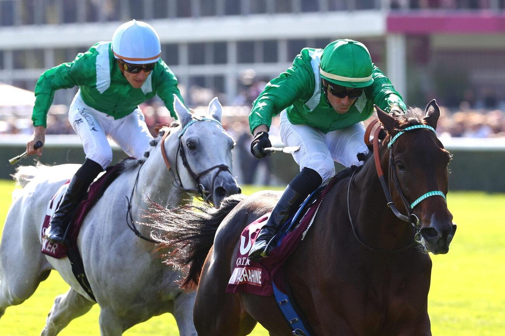

Élisabeth Bernard, primera mujer que gana la Qatar Arabian World Cup, con HM Alchahine
HM Alchahine, gran favorito, se impuso por tres cuartos de cuerpo en la Qatar Arabian World Cup de ParisLongchamp y convirtió a su preparadora, Élisabeth Bernard, en la primera mujer que gana la prueba.

No hubo sorpresa en la carrera reina del pura sangre árabe, la equivalente al Qatar Prix de l'Arc de Triomphe para esta raza. El domingo, dentro del fin de semana del Arco, HM Alchahine respondió a su condición de grandísimo favorito con Cristian Demuro en la silla y paró el crono en 2:13,84.
El margen sobre Hajmah fue de tres cuartos de cuerpo. La yegua, preparada en Les Mathes (Charente-Maritime) por Thomas Fourcy y montada por P.-C. Boudot, defendió la segunda plaza por una cabeza corta ante otra hembra, Chdia. Esta última, con J.-W. Doyle, es preparada por Alban de Mieulle, que trabaja entre Morannes-sur-Sarthe (Maine-et-Loire) y Qatar. Detrás, el cuarto quedó a un cuerpo y cuarto.
La victoria tiene sabor a revancha. Hace un año, HM Alchahine terminó segundo por detrás de Al Ghadeer. Esta vez llegaba lanzado: venía de imponerse con claridad en la Qatar Cup - Prix Dragon, Grupo 1 PA disputado el 6 de septiembre en ParisLongchamp y carrera preparatoria de esta. El triunfo del domingo es el sexto de Grupo 1 PA en su carrera y el tercero seguido.
El resultado deja dos estrenos en el palmarés de la prueba. Élisabeth Bernard, que prepara al caballo en La Teste (Gironde), gana por primera vez la Qatar Arabian World Cup y es la primera mujer que lo consigue. También se estrena el propietario, el emiratí Helal Alalawi, cuyos colores lució HM Alchahine.
La lectura es sencilla: tres victorias consecutivas en la máxima categoría y una segunda plaza el año anterior colocaban a HM Alchahine como el rival a batir, y ninguna de las dos yeguas que lo escoltaron en el podio logró ponerlo en apuros.
Fichas: C. Demuro (jinete) · P.C. Boudot (jinete)
Por Martín Larrañeta